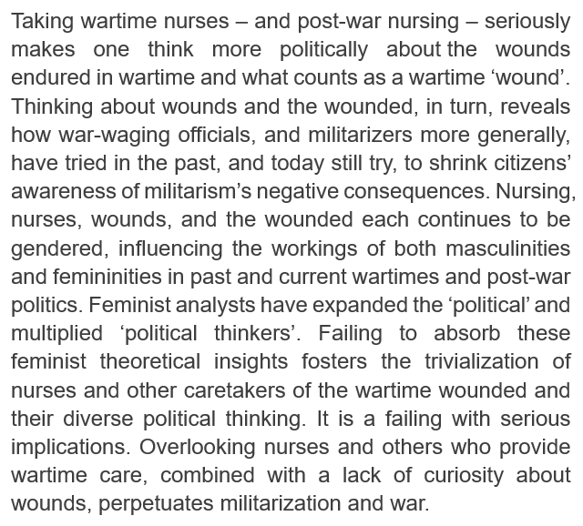
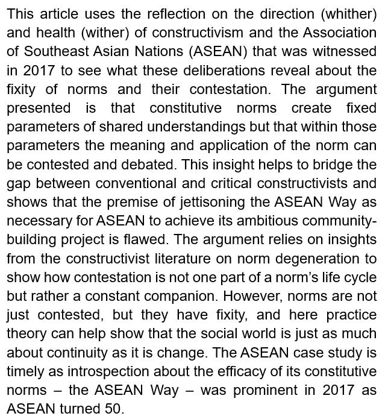
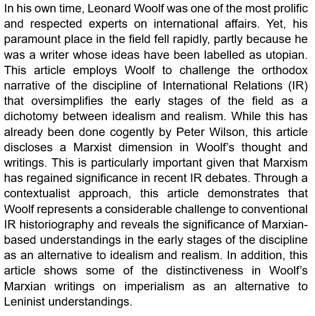
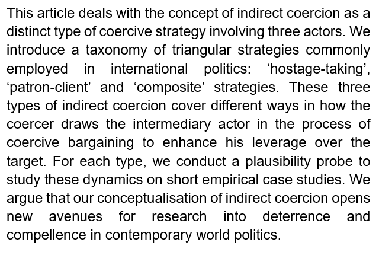
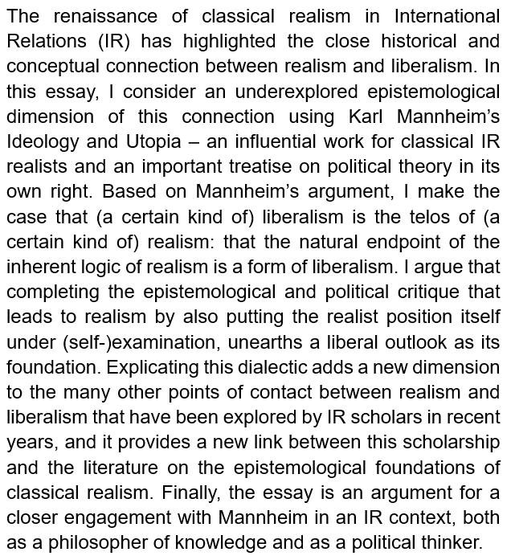
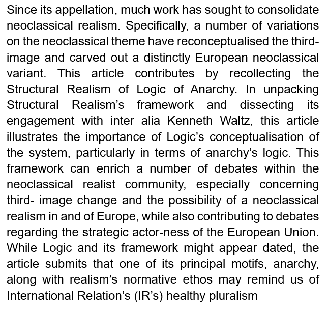

收录于合集 #新刊速递 123个
期刊简介
International Relations（《国际关系》）是国际关系领域的顶尖期刊之一，由SAGE出版社与大卫·戴维斯纪念研究所(David Davies Memorial Institute)联合出版编辑。其2017年影响力因子为1.172，在“国际关系”类别的85种期刊中排名第43。
本期编委
审核：李代霓
编译：李源 蔡宇 金磊 陈舜波
排版：马璐
本期目录
1.Wounds: Militarized Nursing,Feminist Curiosity, and Unending War
创伤：军事护理，女性主义关切，以及无休止的战争
2.W(h)ither the Association of South East Asian Nations (ASEAN)? W(h)ither Constructivism? Fixity of Norms and the ASEAN Way
东盟路（弱）在何方？建构主义路（弱）在何方？规范的固定性与东盟方式
3.The Marxian Influence on Leonard Woolf’s Theory of Imperialism
马克思主义思潮对莱纳德·伍尔夫帝国主义理论的影响
4.Theorising Indirect Coercion: The logic of Triangular Strategies
间接强制战略的理论化：三边战略的逻辑
5.Karl Mannheim and the Liberal Telos of Realism
卡尔·曼海姆与现实主义的自由主义目标
6.Recollecting a Lost Dialogue: Structural Realism Meets Neoclassical Realism
重启对话：结构现实主义与新古典现实主义
摘要译文
1.
创伤： 军事护理,女性主义关切,以及无休止的战争
【题目】 Wounds: Militarized Nursing, Feminist Curiosity, and Unending War
【作者】 Cynthia Enloe, Clark University, USA
【摘要】 严谨看待战时护士和战后护理会让人在政治上更多地思考战争的创伤以及什么才算是战争“创伤”。反过来说，对创伤和伤者的反思也揭示了发动战争的人，或者说军国主义者，一直在试图减少公众对军国主义负面后果的认识。护理、护士、创伤和伤者的性别化延续至今影响着战时和战后政治中男性和女性的工作方式。女性主义学者扩大了“政治”的范围，并使“政治思考者”成倍增加。护士、战时护理员及多样化政治思想受到轻视，如果不吸收这些女性主义的理论见解，将会是一个造成严重影响的失败之举。忽视护士和其他提供战时护理的人，加上对创伤缺乏关心，将会导致战争永无休止。
【关键词】 男性特质，军事化，护士，战后，战争，女性，创伤

Keywords: masculinities, militarization, nurses, post-war, war, women, wounds
【编译】 金磊
【校对】 蔡宇
2.
东盟路（弱）在何方?建构主义路（弱）在何方?规范的固定性与东盟方式
【题目】 W(h)ither the Association of South East Asian Nations (ASEAN)? W(h)ither Constructivism? Fixity of Norms and the ASEAN Way
【作者】 Alan Collins, Swansea University, UK
【摘要】 本文通过对建构主义和东南亚国家联盟（东盟）的发展方向（whither）和健康状况（wither）的反思，揭示了规范的固定性及其争论。文章的观点是，东盟所构建的规范创造了一个基于共识的固定范围，虽然范围是固定的，但在范围内，规范的意义和适用情况可以再讨论。这一观点有助于弥合传统建构主义和批判建构主义之间的鸿沟，并表明东盟放弃东盟方式才能实现共同体建设这一前提是有缺陷的。得出这一论点依赖建构主义文献对规范退化的洞察，争论并非规范的生命周期的一部分，而是永伴其间。规范的争议性和固定性并存，实践理论证明社会世界在变化的同时也是延续的。在2017年东盟成立50周年之际，对东盟的案例研究及对其建构的规范（东盟方式）的反思意义非凡。
【关键词】 东盟，东盟方式，建构主义，规范争论

Keywords: ASEAN, ASEAN Way, constructivism, norm contestation
【编译】 金磊
【校对】 蔡宇
3.
马克思主义思潮对莱纳德·伍尔夫帝国主义理论的影响
【题目】 The Marxian influence on Leonard Woolf’s theory of imperialism
【作者】 Ricardo Villanueva, Universidad del Mar, Mexico.
【摘要】 伦纳德·伍尔夫生前是国际关系领域最多产、最受尊重的专家之一。尽管如此，他首屈一指的学术地位却因乌托邦主义者的标签而急速下滑。本文认为，伍尔夫的观点挑战了将国际关系学科简单二分为理想主义与现实主义的早期叙述。彼得·威尔逊已清晰阐述了上述观点。与此同时，本文探索了伍尔夫的思想和著作中的马克思主义视角。在马克思主义重新成为国际关系理论争论焦点的今天，通过文本研究，本文指出伍尔夫的思想挑战了传统的国际关系的历史叙事，解释了在学科发展之初，以马克思主义为源头的思想具有与理想主义、现实主义等国际关系理论同等的重要性。此外，伍尔夫对帝国主义的著述，呈现出区别于列宁主义的另一种解读。
【关键词】 学科史，理想主义，帝国主义，国际关系，伦纳德·伍尔夫，马克思主义，修正主义

Keywords: disciplinary history, idealism, imperialism, International Relations, Leonard Woolf, Marxism, revisionism
【编译】蔡宇
【校对】金磊
4.
间接强制战略的理论化：三边战略的逻辑
【题目】 Theorising indirect coercion: The logic of triangular strategies
【作者】 Michal Smetana, Jan Ludvik, Charles University, Czech Republic
【摘要】 本文将涉及三边行为体的强制战略作为间接强迫战略的一种独特类型加以研究。作者引进了国际政治中常见的分类方法，将三边战略分为：“人质劫持”战略、“恩庇- 侍从”战略和“复合”战略。这三种间接强制战略各有千秋，均揭示了强迫者通过摆布中间行为者，使他们参与议价，最终对目标加以掌控的策略。在几个精炼的案例研究中，本文对一系列因素进行合理性检验。文章认为，间接强迫的概念化为研究和解释当代世界政治中的威慑和强制战略提供了全新路径。
【关键词】 联盟，胁迫，威慑，间接强制，三边战略

Keywords: alliances, compellence, deterrence, indirect coercion, triangular strategy
【编译】蔡宇
【校对】金磊
5.
卡尔·曼海姆与现实主义的自由主义目标
【题目】 Karl Mannheim and the Liberal Telos of Realism
【作者】 Andreas H Hvidsten, Norwegian School of Theology, Religion and Society, Norway
【摘要】 国际关系（IR）中古典现实主义的复兴凸显了现实主义与自由主义在历史上与概念上的紧密联系。利用卡尔·曼海姆的《意识形态与乌托邦》这一对古典现实主义与政治学理论产生重要影响的著作，本文探讨了现实主义与自由主义这种紧密联系在认识论方面的研究不足。基于曼海姆的观点，本文认为（某种）现实主义的目标是（某种）自由主义，其固有逻辑的终点将通向一种自由主义。反思现实主义本身的立场，实现对现实主义认识论与政治上的批判，有助于我们挖掘现实主义的自由主义思想基础。对这种辩证法的阐述可以为国际关系学者近年来所探索的现实主义与自由主义之间其他的诸多联系增添新的维度，并有助于深化对古典现实主义认识论基础的研究。最后，本文认为作为一位知识哲学家与政治思想家，曼海姆应与国际关系有更紧密的联系。
【关键词】 辩证法，自由主义，卡尔·曼海姆，现实主义

Keywords: dialectic, liberalism, Mannheim, realism
【编译】李源
【校对】陈舜波
6.
重启对话：结构现实主义与新古典现实主义
【题目】 Recollecting a Lost Dialogue: Structural Realism Meets Neoclassical Realism
【作者】 Keith Smith, King’s College London, UK
【摘要】 自新古典现实主义创立以来，学者们为巩固与发展这一理论作出了诸多努力。新古典现实主义所涉及的诸多变量将“第三意象”再概念化，并刻画出了明显的欧洲新古典现实主义的变体。本文回顾了结构现实主义的无政府逻辑。在剖析结构现实主义框架的同时，对肯尼斯·沃尔兹与巴里·布赞等学者的互动进行了分析，本文强调体系逻辑概念化的重要性，尤其是在无政府状态的逻辑方面。这一研究既有助于促进新古典现实主义学派内部的诸多辩论，尤其是涉及到“第三意象”的改变与欧洲新古典现实主义理论发展的可能性，也有助于深化对欧洲战略角色的认识。同时，本文强调回顾现实主义及其无政府逻辑，不意味着否认国际关系中多元主义的存在。
【关键词】 巴里·布赞，新古典现实主义，现实主义，结构现实主义

Keywords: Barry Buzan, neoclassical realism, realism, structural realism
【编译】李源
【校对】陈舜波
点击左下角“ 阅读原文”可获取本期英文版原文
扫下方二维码查看往期精彩
【新刊速递】第01期 | Review of International Studies Vol.45, No.4, 2019
分类导览 1
分类导览 2

点击“在看”分享最新学术文章
国政学人
支持学术公益与知识传播
微信扫一扫赞赏作者 __赞赏
已喜欢，对作者说句悄悄话
取消 __
发送给作者
发送
最多40字，当前共字
上一页 1/3 下一页
长按二维码向我转账
支持学术公益与知识传播
受苹果公司新规定影响，微信 iOS 版的赞赏功能被关闭，可通过二维码转账支持公众号。